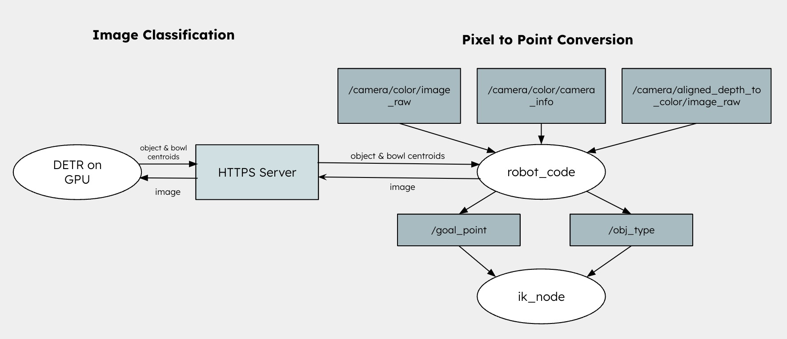

System Pipeline
The core process flow of Dish-n-Dash:
flowchart LR
A[Run Image Classifier]-->B[Compute Transformations]-->C[Pick Up Bowl]-->D[Sort Contents]
A1[Uses DETR model & ResNet-50
Locates object centroids] -.-> A B1[Transform coordinates
Generate optimal path] -.-> B C1[Navigate using IK
Grasp and lift bowl] -.-> C D1[Fruit → Compost
Utensils → Recycling] -.-> D classDef primary fill:#3b82f6,stroke:#2563eb,color:#fff classDef secondary fill:#dbeafe,stroke:#3b82f6,color:#1f2937 class A,B,C,D primary class A1,B1,C1,D1 secondary
Locates object centroids] -.-> A B1[Transform coordinates
Generate optimal path] -.-> B C1[Navigate using IK
Grasp and lift bowl] -.-> C D1[Fruit → Compost
Utensils → Recycling] -.-> D classDef primary fill:#3b82f6,stroke:#2563eb,color:#fff classDef secondary fill:#dbeafe,stroke:#3b82f6,color:#1f2937 class A,B,C,D primary class A1,B1,C1,D1 secondary
Hardware
We used the following hardware components:
- Sawyer Robot Arm
- Intel RealSense Camera
- Custom Sorting Bins
- Gripper Modification


Data Streams
Software
The software pipeline integrates the following systems:
- Object Detection:
In order to make our pipeline as generalizable as possible, we wanted to use an off-the-shelf image classifier called Detection Transformer (DETR). This model is able to detect hundreds of objects, including various fruit items (apple, banana, orange) and dishware (spoons, forks, plates).
Our vision pipeline is the following:
- When we run our main script, we read the first image that the camera topic receives. We refer to our local machine as the client.
- We send the received image to a server in the data center. This is where the DETR model is being hosted, since we need a GPU in order to run inference. We use NGROK to facilitate this request
- DETR takes this image and searches for two items. First, it searches for the bowl. Second, it searches for any of the target objects. It chooses the object with the highest confidence. We return two items: (1) the centroid of the bowl and (2) the detected object inside the bowl
- Our client now knows where it should grasp the bowl and what type of object it needs to sort — in pixel space! We now need to convert this to the robot’s base frame
- Transformations: Next, we need to compute the transformation from the pixel point and to the robot gripper frame.
- We need to first calculate the transform between the pixel point and the camera frame. Using the camera intrinsic parameters, we are able to get the depth data and thus, convert the 2D pixel coordinates into 3D world point in camera frame.
- Since we had set up the camera, we had to manually calculate the transformation between the camera frame and the robot base frame by measuring the x, y, and z offset. Since the camera was oriented to point downwards towards the table, we needed to account for this 90 degree rotation in our transformation as well. This transformation is passed into the software pipeline through this line of code:
rosrun tf static_transform_publisher x y z 0 1.5708 0 base camera_link 100 - Lastly, we need to transform between the robot base frame and the robot right gripper frame. This is done through the inverse kinematics pipeline.
- Trajectory Planning:
Now that we have our grasping point in the robot’s gripper frame, we use inverse kinematics to perform a series of motions to get to the desired location.
- First, we perform IK to move the robot from its initial position (which can be anywhere at the beginning) to the point transformed point that we’ve calculated using vision.
- Next, we use IK to move the robot back to the tuck position, so that it can perform the rest of the motion safely.
- Third, we move the point right above either the dishware or the compost bin, depending on the type of object that is detected.
- Lastly, and most importantly, we computed a rotation for joint four that would allow us to get the tipping motion, such that the object drops from the bowl into the correct bin.